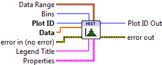
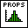
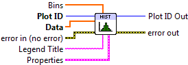

Histogram Plot¶
Make a 1D histogram plot from raw data.
A histogram plot is a bar chart showing the distribution of values in a particular data set. The X axis is divided into a number of regions, or bins, and the data values are sorted into them. The height of the bars indicates the number of elements which fall in each bin.
Both Histogram VIs described here additionally support a cumulative mode, in which the height of each bar indicates the number of values in that bin, plus all previous bins. Turn this on via the Cumulative setting in the property cluster.
By default, the bar heights represent the raw number of values in each bin. If the Normalize setting is True, the bar heights are percentages of the total number of values in the input array.
This VI participates in The Automatic Color Cycle.
This is a polymorphic VI, which provides two subVIs depending on how the bins are specified. To automatically generate a certain number of bins, use Histogram Plot (Automatic). To manually specify bins, use Histogram Plot (Manual). The polymorphic VI will also automatically adapt based on the type of data wired to Bins.
Histogram Plot (Automatic)¶
Make a histogram with a certain number of bins. Provide your 1D data array to Data, and the number of bins desired to the Bins input. By default, the bins will span the full range of the data. You can adjust this “window” via the Data Range cluster.

 Plot ID/Plot ID Out
Plot ID/Plot ID Out- Plot identifier. Plot ID Out always contains the same value as Plot ID.
 Data
Data- Raw data for which to produce the histogram.
- Bins
- Number of bins to use when generating the histogram. Default is 10.
 Data Range
Data RangeControls the range of data displayed.
 Data Min
Data Min- Values smaller than this will be dropped from the histogram.
- Data Max
- Values larger than this will be dropped from the histogram.
 Legend Title
Legend Title- Title to be displayed if a legend is added to the plot.
-  Properties
Property cluster, available under the “Properties” subpalette.
 Color
Color- Color of the bars. By default, uses the next value in the color cycle (shared with Bar Plot).
 Cumulative
Cumulative- If True, display a cumulative histogram, in which each bar represents the number of values in that bin plus all previous bins combined.
- Normalize
- If True, the heights of the bars represent the percentage (0 to 100) of values in each bin, rather than raw counts.
- Line
Controls the appearance of the lines surrounding the bins.
 Style
Style- Line style (solid, dashed, etc.). Default is to automatically select an appropriate style.
- Color
- Line color. May be a PlotColor or LabView color.
 Width
Width- Line width, in font points (1/72 inch).
- Display
Controls the overall appearance of the plot.
- Alpha
- Alpha blending value for this object (0.0 to 1.0). Default is 1.0 (fully opaque).
- Z Order
- Stacking order. Default is chosen based on the object type.

 Error In/Out
Error In/Out- Terminals for standard error functionality.
Histogram Plot (Manual)¶
Make a histogram with the bins explicitly specified. This allows you to create irregularly-sized bins.
Provide your 1D data array to Data, and the bin edges to Bins. Note that since you are giving the locations of the bin edges, if Bins has N elements, N-1 bars will be displayed.
- Plot ID/Plot ID Out
- Plot identifier. Plot ID Out always contains the same value as Plot ID.
- Data
- Raw data for which to produce the histogram.
- Bins
- Bin edges to use when computing the histogram.
- Legend Title
- Title to be displayed if a legend is added to the plot.
- Properties
Property cluster, available under the “Properties” subpalette.
- Color
- Color of the bars. By default, uses the next value in the color cycle (shared with Bar Plot).
- Cumulative
- If True, display a cumulative histogram, in which each bar represents the number of values in that bin plus all previous bins combined.
- Normalize
- If True, the heights of the bars represent the percentage (0 to 100) of values in each bin, rather than raw counts.
- Line
Controls the appearance of the lines surrounding the bins.
- Style
- Line style (solid, dashed, etc.). Default is to automatically select an appropriate style.
- Color
- Line color. May be a PlotColor or LabView color.
- Width
- Line width, in font points (1/72 inch).
- Display
Controls the overall appearance of the plot.
- Alpha
- Alpha blending value for this object (0.0 to 1.0). Default is 1.0 (fully opaque).
- Z Order
- Stacking order. Default is chosen based on the object type.
- Error In/Out
- Terminals for standard error functionality.
Example¶
Download Histogram.vi,
or see Examples for a complete list of examples.
Errors¶
Other information¶
If Data is empty, if Bins is set to 0 (Automatic), or has less than two elements (Manual), no plot is displayed. The color cycle is still advanced.
If Bins is negative (Automatic), the default number of bins will be used.
Non-finite elements in Data are ignored, and are not considered when computing the normalized histogram. Non-finite elements in Bins (Manual) are ignored. The ordering of elements in Bins (Manual) has no significance.